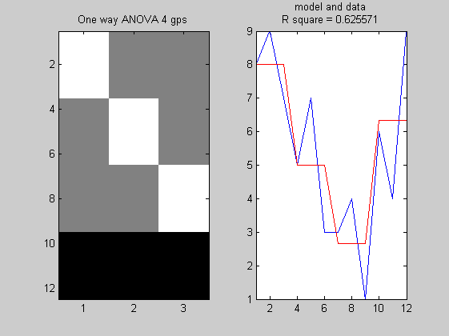
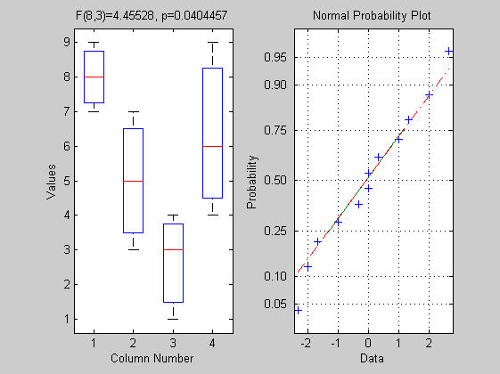
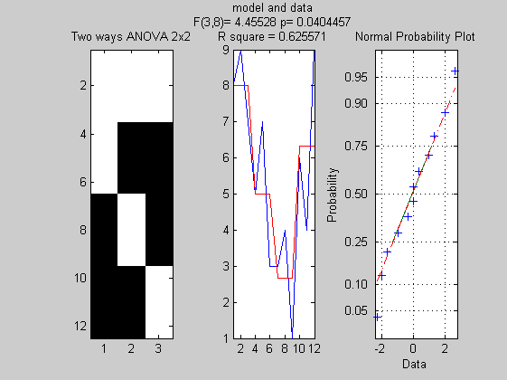
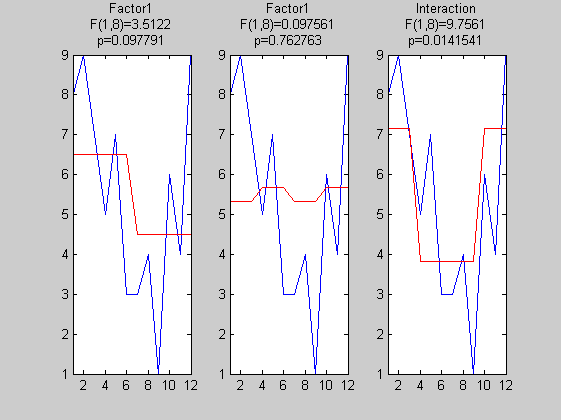
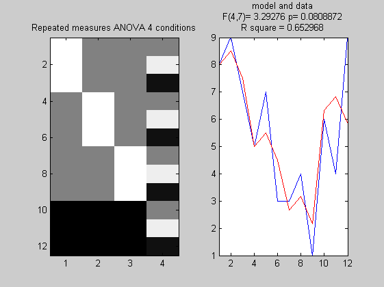
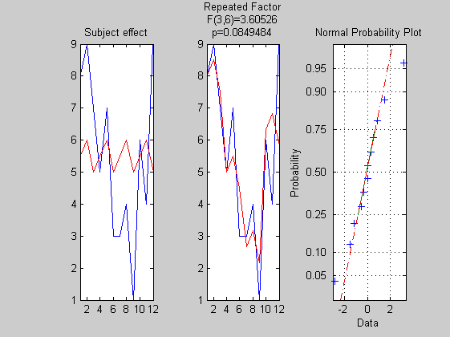

Contents
One way ANOVA
clear
y = [8 9 7 5 7 3 3 4 1 6 4 9]';
n = 3;
X = [ones(1,n) zeros(1,2*n) (ones(1,n)*-1); ...
zeros(1,n) ones(1,n) zeros(1,n) (ones(1,n)*-1); ...
zeros(1,2*n) ones(1,n) (ones(1,n)*-1)]';
[betas, error, stats] = glmfit(X,y,'normal');
yhat = glmval(betas, X, 'identity');
ss_total = norm(y - mean(y)).^2;
ss_effect = norm(yhat - mean(yhat)).^2;
Rsquare = ss_effect/ss_total;
F = (Rsquare *(length(y)-rank(X)-1))/((1- Rsquare)*rank(X));
pval = 1 - fcdf(F, rank(X), (length(y)-rank(X)-1));
figure
subplot(1,2,1); imagesc(X); colormap('gray');
title('One way ANOVA 4 gps')
subplot(1,2,2);
plot(y); hold on; plot(yhat,'r'); axis tight
mytitle = sprintf('R square = %g', Rsquare);
title({'model and data';[mytitle]})
figure;
subplot(1,2,1);
boxplot([8 9 7 ;5 7 3 ;3 4 1 ;6 4 9]');
mytitle = sprintf('F(%g,%g)=%g, p=%g',(length(y)-rank(X)-1), rank(X), F, pval);
title([mytitle])
subplot(1,2,2); normplot(y-yhat);
 
Two way ANOVA
clear
y = [8 9 7 5 7 3 3 4 1 6 4 9]';
n = 3;
Factor1 = [ones(1,n*2) ones(1,n*2)*-1]';
Factor2 = [ones(1,n) ones(1,n)*-1 ones(1,n) ones(1,n)*-1]';
I = (Factor1.*Factor2);
X = [Factor1 Factor2 I];
[betas, error, stats] = glmfit(X,y,'normal');
yhat = glmval(betas, X, 'identity');
ss_total = norm(y - mean(y)).^2;
ss_effect = norm(yhat - mean(yhat)).^2;
Rsquare = ss_effect/ss_total;
F_model = (Rsquare *(length(y)-rank(X)-1))/((1- Rsquare)*rank(X));
pval = 1 - fcdf(F_model, rank(X), (length(y)-rank(X)-1));
[betas, errorF1, stats] = glmfit(Factor1,y,'normal');
yhat_F1 = glmval(betas, Factor1, 'identity');
ss_effectF1 = norm(yhat_F1 - mean(yhat_F1)).^2;
F_F1 = (ss_effectF1/rank(Factor1)) / (error/(length(y)-rank(X)-1))
pval_F1 = 1 - fcdf(F_F1, rank(Factor1), (length(y)-rank(X)-1));
[betas, errorF2, stats] = glmfit(Factor2,y,'normal');
yhat_F2 = glmval(betas, Factor2, 'identity');
ss_effectF2 = norm(yhat_F2 - mean(yhat_F2)).^2;
F_F2 = (ss_effectF2/rank(Factor2)) / (error/(length(y)-rank(X)-1))
pval_F2 = 1 - fcdf(F_F2, rank(Factor2), (length(y)-rank(X)-1));
[betas, errorI, stats] = glmfit(I,y,'normal');
yhat_I = glmval(betas, I, 'identity');
ss_effectI = norm(yhat_I - mean(yhat_I)).^2;
F_I = (ss_effectI/rank(I)) / (error/(length(y)-rank(X)-1))
pval_I = 1 - fcdf(F_I, rank(I), (length(y)-rank(X)-1));
figure;
subplot(1,3,1)
imagesc(X); colormap('gray');
title('Two ways ANOVA 2x2')
subplot(1,3,2);
plot(y); hold on; plot(yhat,'r'); axis tight
mytitle1 = sprintf('R square = %g', Rsquare);
mytitle2 = sprintf('F(%g,%g)= %g p= %g', rank(X), (length(y)-rank(X)-1), F_model, pval);
title({'model and data';[mytitle2];[mytitle1]})
subplot(1,3,3); normplot(y-yhat);
figure;
subplot(1,3,1);
plot(y); hold on; plot(yhat_F1,'r'); axis tight
mytitle1 = sprintf('F(%g,%g)=%g', rank(Factor1), (length(y)-rank(X)-1), F_F1);
mytitle2 = sprintf('p=%g', pval_F1);
title({'Factor1';[mytitle1];[mytitle2]})
subplot(1,3,2);
plot(y); hold on; plot(yhat_F2,'r'); axis tight
mytitle1 = sprintf('F(%g,%g)=%g', rank(Factor2), (length(y)-rank(X)-1), F_F2);
mytitle2 = sprintf('p=%g', pval_F2);
title({'Factor1';[mytitle1];[mytitle2]})
subplot(1,3,3);
plot(y); hold on; plot(yhat_I,'r'); axis tight
mytitle1 = sprintf('F(%g,%g)=%g', rank(I), (length(y)-rank(X)-1), F_I);
mytitle2 = sprintf('p=%g', pval_I);
title({'Interaction';[mytitle1];[mytitle2]})
F_F1 =
3.5122
F_F2 =
0.0976
F_I =
9.7561
 
Repeated measures ANOVA 1 factor
clear
y = [8 9 7 5 7 3 3 4 1 6 4 9]';
n = 3;
F = [ones(1,n) zeros(1,2*n) (ones(1,n)*-1); ...
zeros(1,n) ones(1,n) zeros(1,n) (ones(1,n)*-1); ...
zeros(1,2*n) ones(1,n) (ones(1,n)*-1)]';
S = [(8+5+3+6) (9+7+4+4) (7+3+1+9)]';
X = [F repmat(S,4,1)]
[betas, error, stats] = glmfit(X,y,'normal');
yhat = glmval(betas, X, 'identity');
ss_total = norm(y - mean(y)).^2;
ss_effect = norm(yhat - mean(yhat)).^2;
Rsquare = ss_effect/ss_total;
F_model = (Rsquare *(length(y)-rank(X)-1))/((1- Rsquare)*rank(X));
pval = 1 - fcdf(F_model, rank(X), (length(y)-rank(X)-1));
[betas, error_S, stats] = glmfit(repmat(S,4,1),y,'normal');
yhat_S = glmval(betas, repmat(S,4,1), 'identity');
ss_effect_S = norm(yhat_S - mean(yhat_S)).^2;
[betas, error, stats] = glmfit(F,y,'normal');
yhat_F = glmval(betas, F, 'identity');
ss_total = norm(y - mean(y)).^2;
ss_effect_F = norm(yhat_F - mean(yhat_F)).^2;
F_F = (ss_effect_F/rank(F)) / ((error-ss_effect_S)/(length(X)-rank(F)-(n-1)-1));
pval_F = 1 - fcdf(F_F, rank(F), (length(X)-rank(F)-(n-1)-1));
figure
subplot(1,2,1); imagesc(zscore(X)); colormap('gray');
title('Repeated measures ANOVA 4 conditions')
subplot(1,2,2);
plot(y); hold on; plot(yhat,'r'); axis tight
mytitle1 = sprintf('R square = %g', Rsquare);
mytitle2 = sprintf('F(%g,%g)= %g p= %g', rank(X), (length(y)-rank(X)-1), F_model, pval);
title({'model and data';[mytitle2];[mytitle1]})
figure; subplot(1,3,1);
plot(y); hold on; plot(yhat_S,'r'); axis tight
title('Subject effect')
subplot(1,3,2);
plot(y); hold on; plot(yhat,'r'); axis tight
mytitle1 = sprintf('F(%g,%g)=%g', rank(F), (length(X)-rank(F)-(n-1)-1), F_F);
mytitle2 = sprintf('p=%g', pval_F);
title({'Repeated Factor';[mytitle1];[mytitle2]})
subplot(1,3,3); normplot(y-yhat);
X =
1 0 0 22
1 0 0 24
1 0 0 20
0 1 0 22
0 1 0 24
0 1 0 20
0 0 1 22
0 0 1 24
0 0 1 20
-1 -1 -1 22
-1 -1 -1 24
-1 -1 -1 20
 
Embeded ANOVA design (1 factor independant, 1 factor repeated)
clear
y = [8 9 7 5 7 3 3 4 1 6 4 9]';
n = 3;
Factor1 = [ones(1,n*2) ones(1,n*2)*-1]';
Factor2 = [ones(1,n) ones(1,n)*-1 ones(1,n) ones(1,n)*-1]';
I = Factor1.*Factor2;
S = [(8+5) (9+7) (7+3) (8+5) (9+7) (7+3) (3+6) (4+4) (1+9) (3+6) (4+4) (1+9)]';
X = [Factor1 Factor2 I S];
[betas, error, stats] = glmfit(X,y,'normal');
yhat = glmval(betas, X, 'identity');
Rsquare = (norm(yhat - mean(yhat)).^2)/(norm(y-mean(y)).^2);
[betas, error_F2, stats] = glmfit(Factor2,y,'normal');
yhat_F2 = glmval(betas, Factor2, 'identity');
[betas, error_I, stats] = glmfit(I,y,'normal');
yhat_I = glmval(betas, I, 'identity');
ss_effect_F2 = norm(yhat_F2 - mean(yhat_F2)).^2;
ss_effect_I = norm(yhat_I - mean(yhat_I)).^2;
F_F2 = (ss_effect_F2/rank(Factor2)) / (error/rank(X));
pval_F2 = 1 - fcdf(F_F2, rank(Factor2), rank(X));
F_I = (ss_effect_I/rank(I)) / (error/rank(X));
pval_I = 1 - fcdf(F_I, rank(I), rank(X));
[betas, error_F1, stats] = glmfit(Factor1,y,'normal');
yhat_F1 = glmval(betas, Factor1, 'identity');
ss_effect_F1 = norm(yhat_F1 - mean(yhat_F1)).^2;
error_inter = (norm(y-mean(y)).^2) - ss_effect_F1 - ss_effect_F2 - ss_effect_I - error;
F_F1 = (ss_effect_F1/rank(Factor1)) / (error_inter/rank(X));
pval_F1 = 1 - fcdf(F_F1, rank(Factor1), rank(X));
figure;
subplot(1,3,1)
imagesc(zscore(X)); colormap('gray')
title('Design matrix')
subplot(1,3,2)
plot(y); hold on; plot(yhat,'r'); axis tight
title(['Rsquare =',num2str(Rsquare)])
subplot(1,3,3); normplot(y-yhat)
figure;
subplot(1,3,1)'
plot(y); hold on; plot(yhat_F1,'r'); axis tight
mytitle = sprintf('F(%g,%g)=%g p= %g',rank(Factor1),rank(X),F_F1,pval_F1);
title({'Gp effect';[mytitle]})
subplot(1,3,2);
plot(y); hold on; plot(yhat_F2,'r'); axis tight
mytitle = sprintf('F(%g,%g)=%g p= %g',rank(Factor2),rank(X),F_F2,pval_F2);
title({[mytitle];'Repeated measure effect'})
subplot(1,3,3);
plot(y); hold on; plot(yhat_I,'r'); axis tight
mytitle = sprintf('F(%g,%g)=%g p= %g',rank(I),rank(X),F_I,pval_I);
title({'Interaction';[mytitle]})